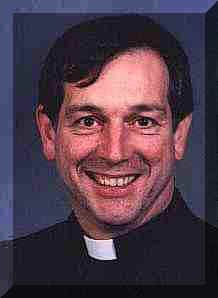

Day One, May 21
"Overwhelmed and excited!" Two words that
describe Paul Feheley after his first day on the job as a member of General Synod.
Paul took a moment out -- in the pouring rain --
from his busy and sometimes confusing day to let us take a peek into his thoughts."It's information
overload," he chuckled. "But it's incredibly exciting."
So far, Paul is finding value in just being with other
Anglicans. "I've had limited exposure to people outside of Toronto for national
events, and suddenly here you could be having breakfast with a bishop in B.C., lunch with
a farmer from Brandon, and so on."
"It's good to know that we're all members of a common
church when we're here -- not 'You're a delegate from X Diocese'; we're all members of the
same General Synod. And that's very encouraging."
"Yes, there are a lot of faults in the church, but
here's a place where we can all listen and be one."
With the Synod theme of Lift Every Voice guiding
his thoughts, Paul thinks listening to every voice is just as important.
"I'm not going to agree with all those voices, but I look forward to listening to
them."
Paul believes it's more of a challenge these days to
really listen to each other. "People want to know where you stand now,"
he explained. "There are more shades of grey and I don't think you can stand
in the middle any more."
Even though Synod business hasn't started yet, Paul says
he already feels his horizons have broadened. And he's anxious to "get into the
resolutions and get things into action."
Day Six, May 26
For anyone else, it would be a lousy way to spend a 20th wedding
anniversary. But for Paul Feheley and his wife who is back home in Oshawa, it makes
perfect sense.
Doing the work of the church is a passion for both
Paul and his "very understanding" spouse. As he reflects on the Synod at
the half-way way mark ("95% to 99% of which I'm actually enjoying"), Paul says
he's exhausted but excited to be learning a lot.
"It's like the end of a good worship
service," he explains. "You're spiritually drained but excited because
you've done what God has asked you to do."
And so far, Synod hasn't held as many surprises as he
thought it would. The tone of debate, for example, he is glad to be finding
refreshingly respectful. So far, Paul has only spoken at the mike once. But
he is finding more value in the discussions, not necessarily the formal debate.
"I've used the forums mostly to learn more
about the wider church. For instance, I attended the forum on Northern Ministry
which is something I didn't know a lot about. . . . And learning these new skills and ways
of listening to people from different cultures is important."
One thing Paul says he's valued was time spent getting to
know people from his own diocese better. "I see these people from time
to time in the diocese, but being able to spend so much time learning and sharing with
them has been very helpful. At our table, nobody wears clerical dress, so we all
come together in a community and harmonious way."
Paul was looking forward to the evening off, which he was
to spend with his diocece having dinner and visiting the open house at a
nearby Convent. |

Paul Feheley is rector of St. George's Oshawa.
And this is his first time at a General Synod.
He is at General Synod "to learn more about how other
Canadian Anglicans think and understand our Church. As with perhaps most people I love our
Church but worry about its future direction and the danger of division."
The Rev. Canon Feheley has been ordained for twenty years and has
been active in the leadership of his diocese.
Thanks to his generous participation, we'll be following Paul
around for the next few days
-- finding out what he's thinking, how he's feeling, and what surprises he's finding. |